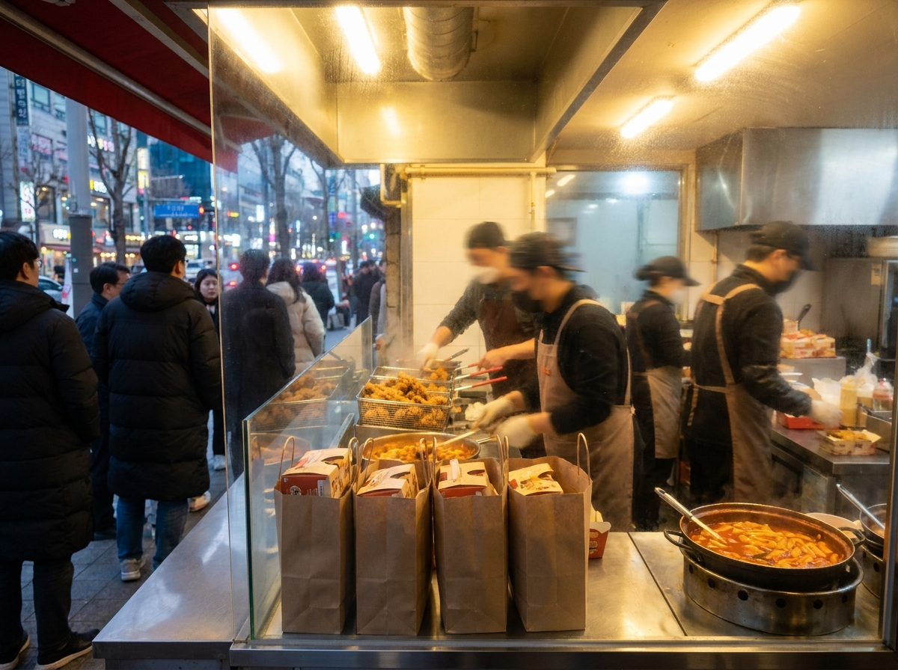
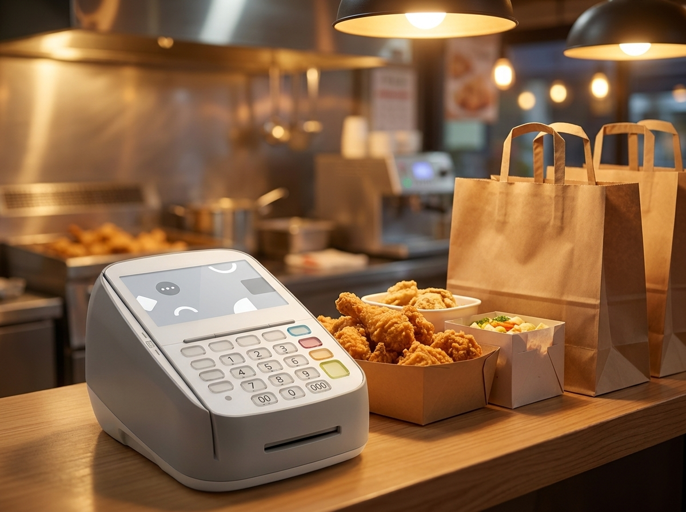
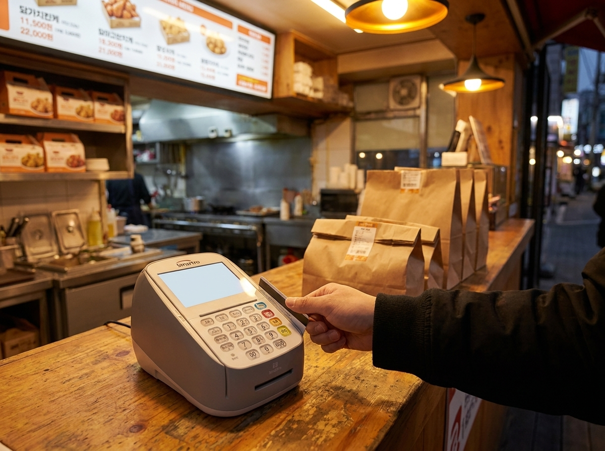

배달앱 수수료가 마진을 갉아먹을 때, 사장님이 되찾을 수 있는 매출은 어디에 있을까요
결론부터 말씀드리면, 배달앱 하나에만 매출을 의존하는 구조에서는 아무리 주문이 늘어도 남는 돈이 줄어들 수 있고, 해법은 "배달을 끊는 것"이 아니라 자체 포장·전화·단골 주문 채널과 매장 결제를 함께 키워 균형을 잡는 것입니다. 저희 누리네트웍스는 14년간 수도권에서 3만여 매장의 결제 환경을 직접 설치·관리해 오면서, 같은 매출인데도 남는 돈이 다른 매장들의 공통점을 지켜봤습니다. 핵심은 언제나 "어느 채널로 결제가 들어오느냐"였습니다. 중개·결제 수수료가 겹겹이 붙는 주문과, 매장에서 바로 결제되는 주문은 최종 마진이 전혀 다릅니다. 이 글에서는 그 구조를 정리하고, 사장님이 오늘부터 손댈 수 있는 실전 방법을 안내드리겠습니다.

배달 매출이 늘어도 남는 게 줄어드는 이유
배달앱 주문 한 건에는 눈에 보이는 금액 뒤로 여러 비용이 겹쳐 붙습니다. 중개(주문 중개) 수수료, 결제(카드·간편결제) 수수료, 배달비 부담, 그리고 각종 광고·프로모션 비용이 그것입니다. 문제는 이 비용들이 매출에 비례해서 늘어난다는 점입니다. 주문이 두 배가 되면 재료비뿐 아니라 수수료도 두 배가 되기 때문에, 매출 그래프는 우상향인데 통장 잔고는 제자리인 상황이 생깁니다.
특히 놓치기 쉬운 부분이 채널이 하나로 쏠릴 때의 협상력 약화입니다. 전체 주문의 대부분이 특정 플랫폼에서 나오면, 그 플랫폼의 정책 변화나 수수료 조정에 그대로 노출됩니다. 반대로 자체 채널·매장 방문·단골 주문의 비중이 어느 정도 받쳐주면, 플랫폼 의존도가 낮아지고 사장님이 스스로 통제할 수 있는 매출이 늘어납니다. 구체적인 수수료율과 정산 구조는 각 배달 플랫폼 공지와 공정거래위원회 등 공식 안내에서 반드시 최신 기준을 확인하시길 권합니다. 요율은 시기와 조건에 따라 달라지기 때문입니다.
주문 채널별로 무엇이 다른지 한눈에 정리
아래는 대표적인 주문·결제 채널을 사장님 관점에서 정리한 표입니다. 어디에 비용이 붙고, 어디서 단골을 만들 수 있는지 감을 잡는 용도로 봐주시면 됩니다.
| 채널 | 붙는 비용 성격 | 단골화 가능성 | 참고 |
|---|---|---|---|
| 배달앱 중개 주문 | 중개+결제+배달비+광고 | 낮음(고객정보 제한) | 요율은 공식 안내 확인 |
| 자체 포장 주문 | 결제 수수료 중심 | 중간 | 매장 노출·픽업 유도 |
| 전화 주문 | 결제 수수료 중심 | 높음(단골 관계) | 응대 품질이 핵심 |
| 자체 주문 채널·홈 | 상대적으로 낮은 편 | 높음 | 운영 관리 필요 |
| 매장 방문 결제 | 카드 결제 수수료 | 매우 높음 | 재방문·현장 응대 |
위 표는 채널의 성격을 이해하기 위한 개념 정리이며, 실제 수수료율·정산 조건·정책은 각 배달 플랫폼과 공정거래위원회 등 공식기관의 최신 안내를 통해 확인하셔야 정확합니다.

오늘부터 손댈 수 있는 균형 잡기 실전법
첫째, 포장 고객을 우대해 매장으로 유도하는 것입니다. 포장 시 소소한 서비스나 다음 방문 혜택을 얹으면, 배달로 처음 만난 고객을 매장 단골로 돌릴 수 있습니다. 둘째, 전화·자체 주문 채널을 안내하는 습관입니다. 포장 봉투, 영수증, 매장 스티커, 단골 문자 등에 "직접 주문 시 이런 점이 좋습니다"를 자연스럽게 노출하면 재주문이 자체 채널로 옮겨옵니다.
셋째, 매장 결제 데이터를 단골 관리로 연결하는 것입니다. 재방문 고객, 자주 오는 시간대, 인기 메뉴를 포스로 파악하면 마케팅을 감이 아니라 숫자로 할 수 있습니다. 송도·동탄·판교처럼 상권 경쟁이 치열한 수도권 지역일수록, 배달 비중을 무리하게 늘리기보다 단골 재방문율을 끌어올리는 쪽이 마진 방어에 유리한 경우가 많습니다. 넷째, 채널별 손익을 월 단위로 따로 보는 습관입니다. 배달·포장·매장 매출의 최종 남는 돈을 분리해서 보면, 어디에 힘을 실어야 할지가 분명해집니다. 처음에는 완벽한 분석이 아니어도 괜찮습니다. 한 달만 채널별로 매출과 비용을 나눠 적어봐도, 그동안 보이지 않던 "밑 빠진 독"이 어디인지 눈에 들어오기 시작합니다.
매장 결제와 단골 관리, 누리네트웍스가 함께 설계합니다
누리네트웍스는 수도권 서울·인천·경기 전역에 직접 방문 설치·관리하는 결제단말·포스 전문 대리점입니다. 14년 업력, 3만여 매장 운영 경험, 200곳이 넘는 레퍼런스, 연매출 70억 규모로 쌓아온 노하우로, 단순히 단말기만 놓고 가는 것이 아니라 매장 결제를 단골·재방문 관리로 잇는 구조까지 함께 설계해 드립니다.
포스로 재방문·인기 메뉴·시간대 데이터를 챙기면, 배달앱에 의존하지 않고도 사장님 손 안에서 매출을 관리할 수 있습니다. 가격은 사장님 매장 상황에 맞춰 거품을 뺀 직접 공급가로 상담 시 정확히 안내드립니다. 특히 토스단말기와 네이버단말기는 월 0원·약정 없음으로 시작 부담을 낮출 수 있으니, 배달 비중을 줄이며 매장 결제를 강화하려는 사장님께 부담 없는 출발점이 됩니다. 업종과 좌석 수, 포장·배달·홀 비중에 따라 맞는 구성이 달라지는 만큼, 현장을 직접 보고 설계하는 것이 가장 확실합니다.

자주 묻는 질문(FAQ)
Q. 배달앱을 아예 끊는 게 답인가요?
아닙니다. 배달앱은 신규 고객을 만나는 창구로서 여전히 유효합니다. 다만 매출 전부를 거기에 걸지 말고, 자체 포장·전화·단골 주문과 매장 결제를 함께 키워 의존도를 낮추는 균형이 핵심입니다.
Q. 정확한 수수료율은 어디서 확인하나요?
중개·결제·배달비 요율과 정산 구조는 시기와 조건에 따라 달라집니다. 각 배달 플랫폼의 공지사항과 공정거래위원회 등 공식기관의 최신 안내를 직접 확인하시는 것이 가장 정확합니다. 이 글의 표와 설명은 개념 이해를 돕기 위한 것으로, 특정 요율을 단정하지 않습니다.
Q. 소규모 매장도 자체 주문 채널을 운영할 수 있나요?
네. 처음부터 거창하게 시작할 필요는 없습니다. 전화 주문 응대를 다듬고, 포장 고객에게 재주문 안내를 하는 것만으로도 자체 채널의 기초가 됩니다. 소상공인 지원 정보는 소상공인시장진흥공단 등 공식기관 안내도 참고하시면 좋습니다.
Q. 매장 결제 데이터로 정말 단골을 늘릴 수 있나요?
포스에 쌓이는 재방문·시간대·메뉴 데이터를 활용하면 감이 아니라 숫자로 단골을 관리할 수 있습니다. 어떤 방식이 매장에 맞는지는 상담 시 매장 상황을 보고 함께 설계해 드립니다.
배달 수수료 부담, 매장 결제부터 점검해 보세요
배달앱 수수료 구조가 부담되신다면, 무작정 배달을 줄이기보다 매장 결제와 단골 관리부터 점검하는 것이 순서입니다. 누리네트웍스가 수도권 현장에 직접 방문해 사장님 매장에 맞는 결제·단골 구조를 함께 그려 드리겠습니다. 부담 없이 문의해 주세요.
- 📞 전화상담 1544-7754
- 🌐 홈페이지 nwpos.co.kr


이미지1-매장: 포장 손님을 맞이하며 매장에서 직접 결제를 안내하는 사장님 모습
이미지2-제품: 카운터에 놓인 유선카드단말기와 포스로 주문을 정리하는 장면
이미지3-사용: 단골 고객이 매장에서 카드로 결제하고 재방문 안내를 받는 장면